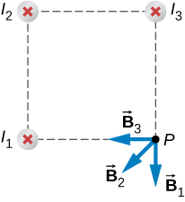

By the end of this section, you will be able to:
How much current is needed to produce a significant magnetic field, perhaps as strong as Earth’s field? Surveyors will tell you that overhead electric power lines create magnetic fields that interfere with their compass readings. Indeed, when Oersted discovered in 1820 that a current in a wire affected a compass needle, he was not dealing with extremely large currents. How does the shape of wires carrying current affect the shape of the magnetic field created? We noted in Magnetic Forces and Fields that a current loop created a magnetic field similar to that of a bar magnet, but what about a straight wire? We can use the Biot-Savart law to answer all of these questions, including determining the magnetic field of a long straight wire.
Figure 12.5 shows a section of an infinitely long, straight wire that carries a current I. What is the magnetic field at a point P, located a distance R from the wire?
Let’s begin by considering the magnetic field due to the current element located at the position x. Using the right-hand rule 1 from the previous chapter, points out of the page for any element along the wire. At point P, therefore, the magnetic fields due to all current elements have the same direction. This means that we can calculate the net field there by evaluating the scalar sum of the contributions of the elements. With we have from the Biot-Savart law
The wire is symmetrical about point O, so we can set the limits of the integration from zero to infinity and double the answer, rather than integrate from negative infinity to positive infinity. Based on the picture and geometry, we can write expressions for r and in terms of x and R, namely:
Substituting these expressions into Equation 12.5, the magnetic field integration becomes
Evaluating the integral yields
Substituting the limits gives us the solution
The magnetic field lines of the infinite wire are circular and centered at the wire (Figure 12.6), and they are identical in every plane perpendicular to the wire. Since the field decreases with distance from the wire, the spacing of the field lines must increase correspondingly with distance. The direction of this magnetic field may be found with a second form of the right-hand rule (illustrated in Figure 12.6). If you hold the wire with your right hand so that your thumb points along the current, then your fingers wrap around the wire in the same sense as
The direction of the field lines can be observed experimentally by placing several small compass needles on a circle near the wire, as illustrated in Figure 12.7. When there is no current in the wire, the needles align with Earth’s magnetic field. However, when a large current is sent through the wire, the compass needles all point tangent to the circle. Iron filings sprinkled on a horizontal surface also delineate the field lines, as shown in Figure 12.7.
Wire 2 has a longer distance and a magnetic field contribution at point P of:
The vectors for each of these magnetic field contributions are shown.
The magnetic field in the x-direction has contributions from wire 3 and the x-component of wire 2:
The y-component is similarly the contributions from wire 1 and the y-component of wire 2:
Therefore, the net magnetic field is the resultant of these two components:
Using Example 12.3, keeping the currents the same in wires 1 and 3, what should the current be in wire 2 to counteract the magnetic fields from wires 1 and 3 so that there is no net magnetic field at point P?